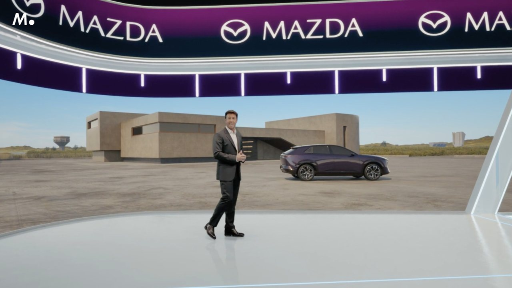
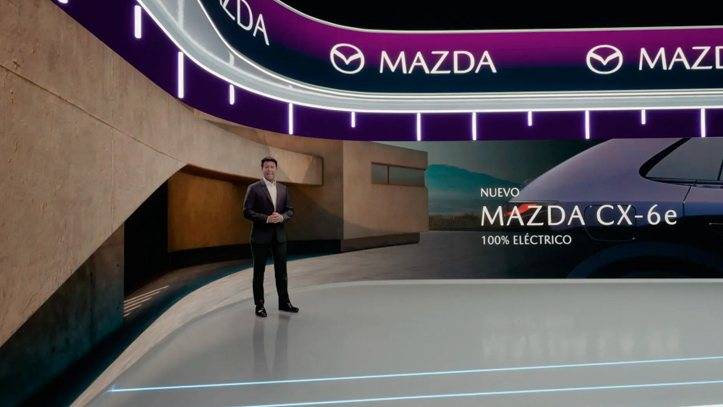

Producción virtual · MR Factory
Tech Insight para Publiespaña y Mazda
Matías Prats Chacón sale del plató de ElDesmarque y entra en un universo 3D construido alrededor del Mazda CX-6e. En MR Factory hicimos el entorno en Unreal Engine y todo lo que hay detrás.
3integraciones en prime time
CuatroElDesmarque
Unreal Engine · XR · Producción virtual

